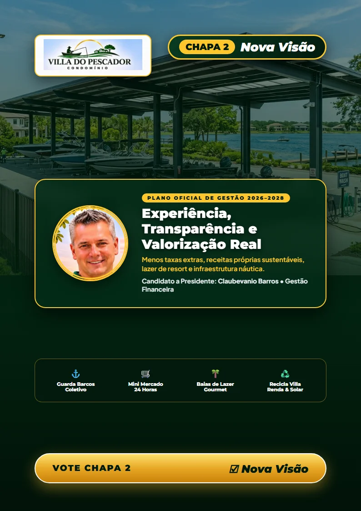

"Experiência, Gestão e Compromisso Real com o Condomínio Villa do Pescador!"
Chega de promessas vazias e improvisos. Apresentamos uma chapa formada por moradores capacitados, com experiência comprovada de síndico, formação em gestão financeira e projetos estruturados com viabilidade orçamentária para valorizar o patrimônio de todos.
Consulte o documento completo em 10 páginas A4 apresentado pela CHAPA 2. Totalmente transparente, estruturado por eixos estratégicos e com planejamento técnico para o Villa do Pescador.

Conheça cada membro da nossa chapa: gestores com experiência comprovada de síndico, servidores públicos, especialistas em finanças e saúde prontos para cuidar do Villa do Pescador.
Projetos estruturados para atender às necessidades reais do condomínio: valorização patrimonial, conforto diário, segurança náutica e equilíbrio financeiro. Deslize para ver todos os eixos oficiais.
Materiais verticais em alta resolução prontos para compartilhar no WhatsApp, Stories do Instagram e grupos de moradores. Toque em qualquer flyer para ampliar e baixar.
Mesmo se você reside em Brasília/DF, no entorno ou estiver viajando na data da assembleia, seu voto pode ser exercido e fazer a diferença!
Compareça ao condomínio na data e hora marcadas para a Assembleia Geral com documento de identidade oficial com foto (RG, CNH ou Passaporte) para registrar seu voto direto na CHAPA 2 • NOVA VISÃO.
Nosso Estatuto Social autoriza expressamente a representação por procuração simples. Você pode nomear um vizinho de confiança ou um representante legal da CHAPA 2 para votar no seu lote.
Basta preencher o modelo padrão oficial de procuração e assinar eletronicamente através do aplicativo gratuito Gov.br (com validade jurídica plena) ou assinatura física.